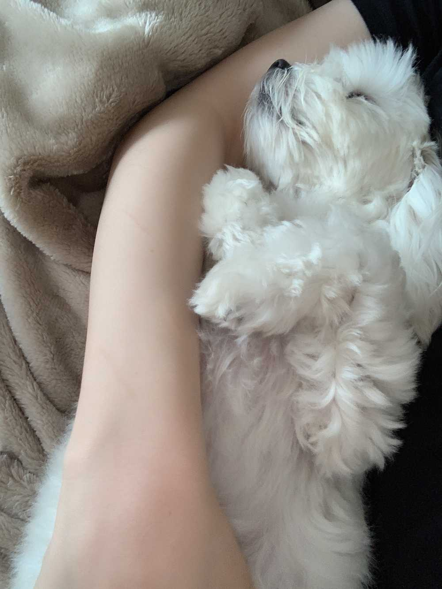

비가 와요 주륵주륵☔️
원래 한의원 갈 때
아침이라 눈이 안떠져 피곤하니
택시를 타고
돌아올 때 지하철을 타는데
오늘은 아빠 출근하시는 소리 덕분에
알람보다 먼저 깼어요! 그래서
거꾸로 갈 때 지하철을 탔고
지금 택시타고 연습실로 가는 중이예욧!
비가 오니 막힐까봐 불안했는데
아주 잘 달리고 있습니다=33
무가당 요거트 한동안 많은 이유들을 핑계..(?!)로
잘 못먹었는데 일단 핑계 한 번 들어주세요
1. 사야하는 무가당 요거트는 편의점에 절대 없다! 인터넷 주문 해야함
2. 유통기한이 짧아서 한 번에 많이 구매하기도 어려움
3. 콘서트/ 해외 일정으로 뚜껑있는 요거트가 아니면 갖고 가기가 힘듦! 부피도 많이 차지함요거트 먹방했을 때 보셨죠 ...많은 준비물이 필요함
4. 호텔에 요거트와 한약 그리고 두유 등등 감당할 냉장고가 없음 (LA 제외)
네 그렇습니다.. 납득이 가쥬??
다시 열심히 먹어보겠습니다!!!!
요거트가 분해 많이 해준대요...ㅋㅋㅋㅋㅋㅋㅋㅋㅋㅋㅋㅋㅋㅋㅋㅋㅋㅋㅋㅋㅋㅋㅋㅋㅋㅋㅋㅋㅋ
오늘 아침에도 요거트 먹었는데
채소가 빤히 쳐다보는 거예요
그리고 막 찡찡대 자기도 달라구 ㅠㅠ
근데 안줬어요
채소 오늘 아파서ㅠㅠ